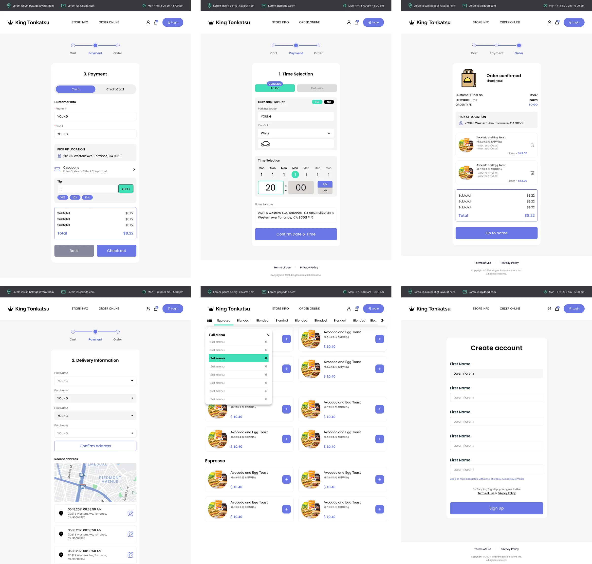
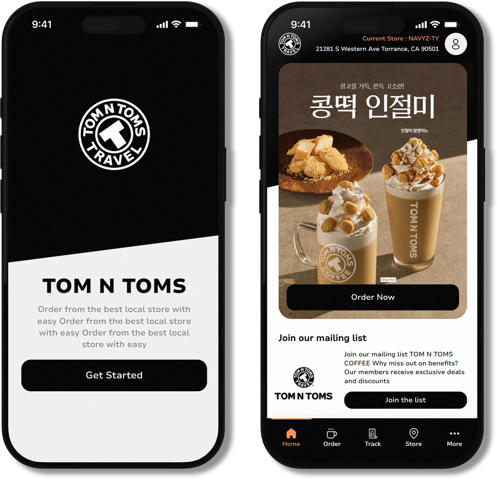
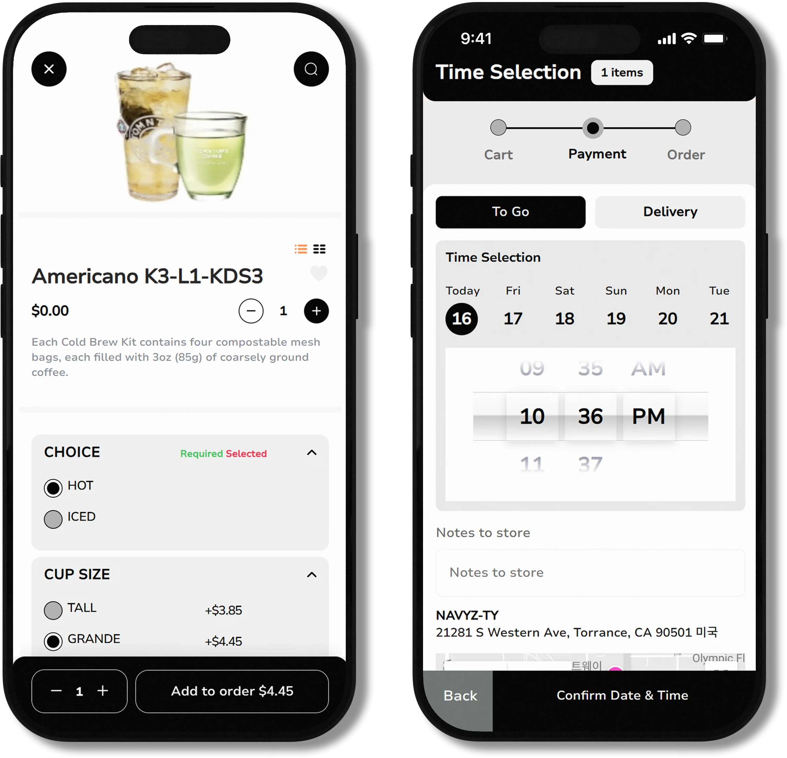
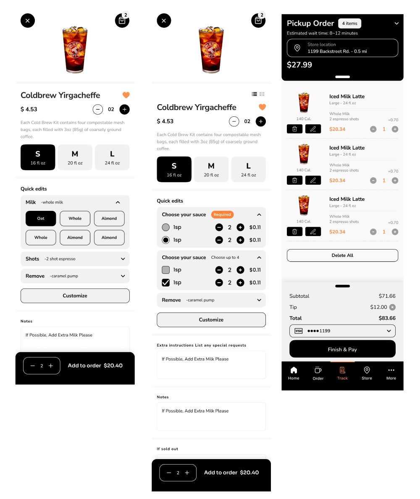
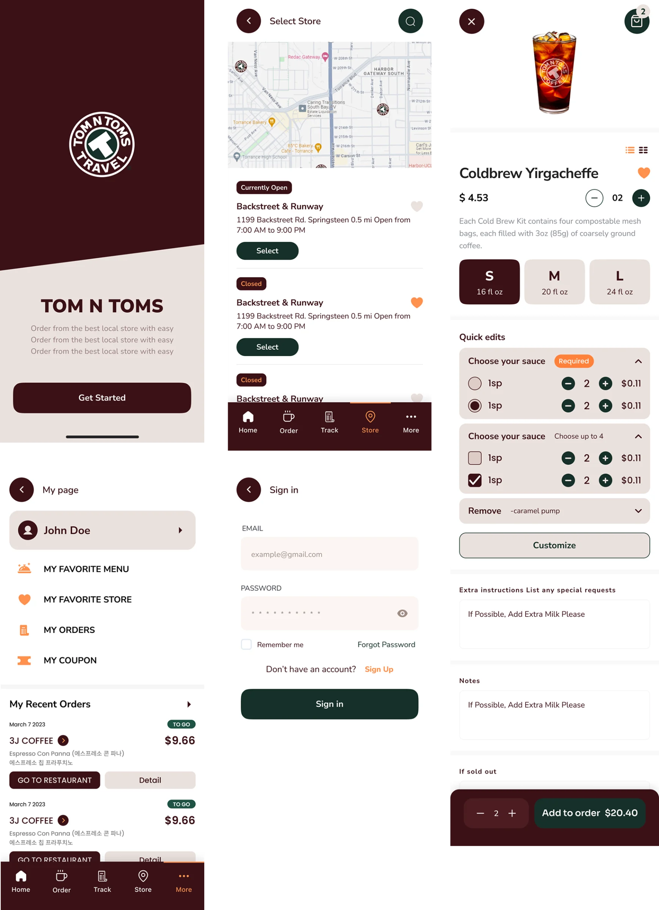

목표
브랜드는 달라도 주문 흐름은 같아야 하는 가맹 주문 사이트를 하나의 템플릿으로 빠르게 온보딩하는 것.
담당
기본 템플릿과 브랜드별 배포본(bhc · 육대장 · 인쌩맥주 · 탐앤탐스)의 퍼블리싱을 담당했습니다. 데스크톱과 모바일 두 화면을 함께 작업했습니다.
결과
메뉴를 목록형·박스형으로 바꿔 보는 보기 전환을 구현하고, 브랜드 컬러·폰트·로고만 교체하면 되는 스킨 구조로 마크업·스타일을 정리했습니다. 메인 · 메뉴 목록과 상세 · 장바구니 · 주문 확인 · 로그인 · 회원가입 · 마이페이지(주문내역 · 쿠폰 · 즐겨찾는 메뉴 · 정보수정)를 두 화면으로 각각 구현했습니다.
기술
- HTML
- CSS
- jQuery
- Swiper
01 — 기본 템플릿

02 — 독립형 웹 앱




03 — 브랜드별 화면
데스크톱 · 모바일 반응형 퍼블리싱
브랜드별 색상 교체 (하나의 템플릿 → 여러 브랜드)
메인 배너 · 상품 목록 슬라이더
목록 영역 커스텀 스크롤
마이페이지 · 로그인 · 회원가입 화면
코딩
디자인 협업